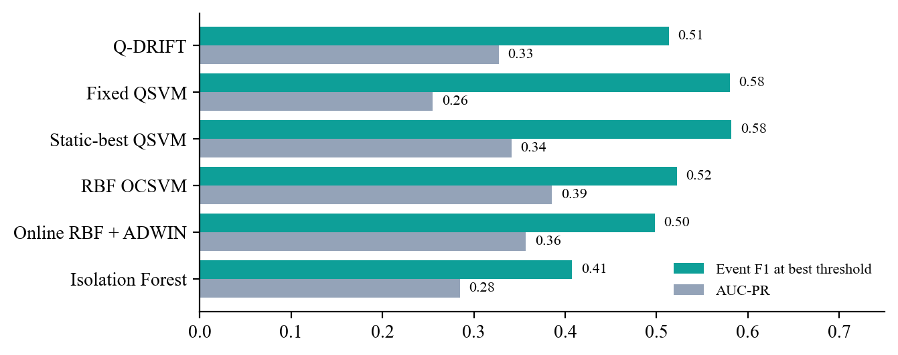
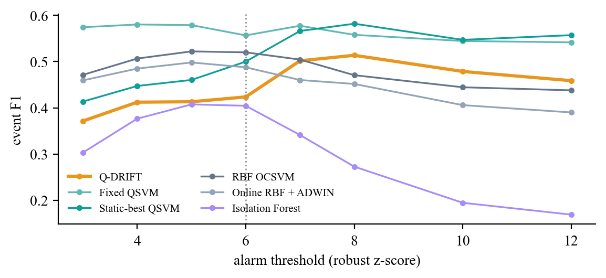
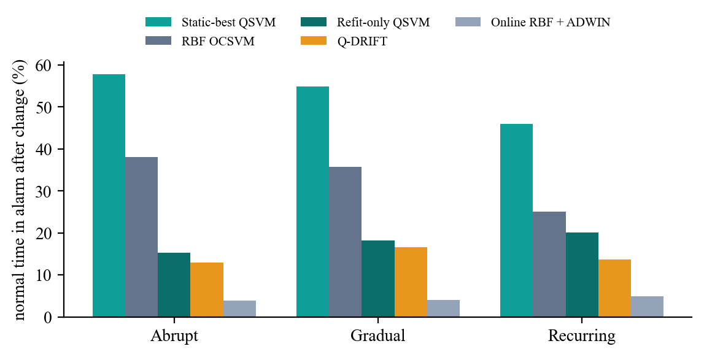
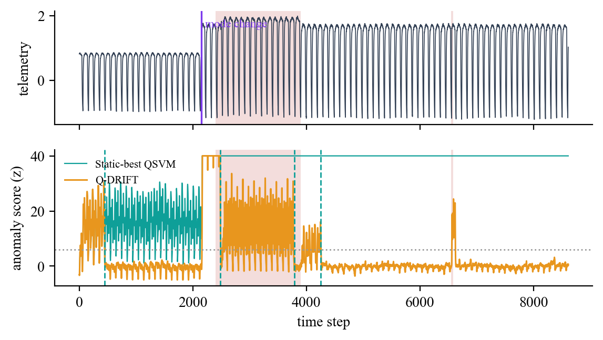
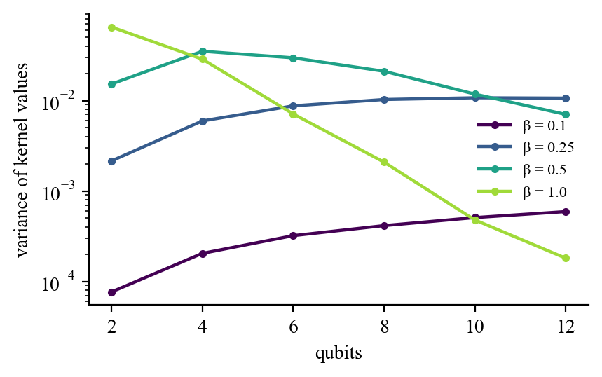

SRM Institute of Science and Technology
LLJ II Team Task Performance Review: implementation, demonstration and results
| Name | Register number |
|---|---|
| Venkatanathan O R V | RA2411026011163 |
| Mayukh Sarkar | RA2411026011218 |
| Aman Salarpuria | RA2411003012435 |
| Course | Quantum Machine Learning |
| Faculty | Dr. M. L. Sworna Kokila |
| Code and data pipeline | github.com/Venkatreacts/Q-DRIFT, folder 06_Implementation |
We implemented the Q-DRIFT system proposed at LLJ I and evaluated it on all 81 channels of the NASA SMAP/MSL benchmark (105 labelled anomaly sequences), streamed strictly in time order. Eighteen quantum encodings (angle, ZZ and IQP circuits at three bandwidths and two depths) are simulated in PennyLane; their fidelity kernels drive a one-class SVM. An ADWIN drift test, a switch-validation step, an encoding-selection rule with a circuit-cost penalty, a reservoir of past normal behaviour and a mode cache make the detector adaptive. The quantum kernels are verified against Qiskit to 10−10.
A well-selected quantum kernel reaches event-level F1 0.58 at its best threshold against 0.52 for a classical RBF kernel and catches more anomalies (82 vs 65 of 105), but the RBF kernel ranks time steps better (AUC-PR 0.385 vs 0.341). On the unmodified streams adaptation costs precision. Under injected operating-mode changes, Q-DRIFT spends 70–78% less normal time in false alarm than the same quantum model without adaptation. Testing also showed that the selection rule we proposed, kernel-target alignment, prefers concentrated kernels; we replaced it with a held-out fault-detection test and explain the failure through kernel concentration.
Keywords: quantum kernels, one-class SVM, concept drift, ADWIN, kernel concentration, spacecraft telemetry, NASA SMAP/MSL.
| Component | Files | What it does |
|---|---|---|
| Data pipeline | qdrift/data.py | Loads the 81 labelled channels (P-2's duplicate label rows merged), z-normalises each on its training segment, cuts 64-step windows, compresses each to 6 values by PCA and scales them to angles. |
| Encoding library | qdrift/featuremaps.py | 18 PennyLane circuits; statevectors computed once per window with parameter broadcasting; fidelity kernel |⟨ψ(x′)|ψ(x)⟩|². |
| Kernel analysis | qdrift/kernels.py | Kernel-target alignment, expressibility, Meyer–Wallach entanglement, concentration, depolarising and shot-noise models. |
| Detectors | qdrift/models.py | Quantum one-class SVM on a precomputed kernel; RBF one-class SVM and Isolation Forest baselines. |
| Drift test | qdrift/adwin.py | ADWIN implemented from equation (3) of the abstract. |
| Controller | qdrift/stream.py | The Q-DRIFT loop and every baseline, as configurations of one streaming runner. |
| Evaluation | qdrift/metrics.py, experiments/run_all.py | Event-level and point-wise metrics, Wilcoxon tests, all experiments, JSON output. |
| Console | app/server.py, app/static/ | Local web app: mission replay, live runs with injected drift, results, encoding library, kernel lab. |
| Tests | tests/test_core.py | 27 tests, including the Qiskit cross-check. |
Table 1. Implementation, in the 06_Implementation folder of the repository.
Each window x is scaled by bandwidth β and encoded by Uc(βx). Angle maps apply RY rotations (depth 2 adds a CNOT ring between layers); ZZ maps follow Havlíček et al. with φij = (π − xi)(π − xj) on neighbouring qubits; IQP maps use φij = xixj on all pairs. The kernel kc(x, x′) = |⟨0|Uc†(βx′)Uc(βx)|0⟩|² is what one compute–uncompute circuit estimates on hardware; in simulation each window's state is computed once and kernels are inner products. The one-class SVM (ν = 0.05) gives s(x) = ρ − Σi αi k(xi, x). Scores are converted to a robust z-score (median and MAD on calibration windows), smoothed with an exponential average (0.2), and an alarm is raised above z = 6.
| Encoding | 1-qubit gates | 2-qubit gates | Cost | Expressibility (KL) | Entangling (Q) |
|---|---|---|---|---|---|
| ANGLE b=0.1 d=1 | 6 | 0 | 12 | 147.888 | 0.000 |
| ANGLE b=0.1 d=2 | 12 | 6 | 144 | 109.362 | 0.127 |
| ANGLE b=0.3 d=1 | 6 | 0 | 12 | 33.909 | 0.000 |
| ANGLE b=0.3 d=2 | 12 | 6 | 144 | 13.895 | 0.620 |
| ANGLE b=1 d=1 | 6 | 0 | 12 | 0.547 | 0.000 |
| ANGLE b=1 d=2 | 12 | 6 | 144 | 0.250 | 0.685 |
| ZZ b=0.1 d=1 | 17 | 10 | 234 | 1.492 | 0.663 |
| ZZ b=0.1 d=2 | 34 | 20 | 468 | 0.944 | 0.617 |
| ZZ b=0.3 d=1 | 17 | 10 | 234 | 0.117 | 0.678 |
| ZZ b=0.3 d=2 | 34 | 20 | 468 | 0.131 | 0.544 |
| ZZ b=1 d=1 | 17 | 10 | 234 | 0.122 | 0.663 |
| ZZ b=1 d=2 | 34 | 20 | 468 | 0.096 | 0.539 |
| IQP b=0.1 d=1 | 27 | 30 | 654 | 143.482 | 0.005 |
| IQP b=0.1 d=2 | 54 | 60 | 1308 | 144.899 | 0.005 |
| IQP b=0.3 d=1 | 27 | 30 | 654 | 24.275 | 0.306 |
| IQP b=0.3 d=2 | 54 | 60 | 1308 | 28.099 | 0.324 |
| IQP b=1 d=1 | 27 | 30 | 654 | 0.105 | 0.905 |
| IQP b=1 d=2 | 54 | 60 | 1308 | 0.148 | 0.874 |
Table 2. The 18-encoding library (6 qubits). Two-qubit gates are CNOT-equivalents (IsingZZ = 2). Cost weights two-qubit gates ×10 over one U†U circuit. Expressibility: KL divergence from Haar fidelities (lower is more expressive).
Every switch logs the circuits a quantum processor would run: m(m−1)/2 per kernel matrix, plus one circuit per support vector per scored window.
| Check | Result |
|---|---|
| PennyLane ZZ kernel vs Qiskit zz_feature_map (independent library) | Equal to 10−10 |
| All 18 kernels: unit diagonal, symmetric, positive semidefinite, values in [0, 1] | Pass |
| Angle encoding vs closed form ∏ cos²(β(xi − x′i)/2) | Pass |
| Depolarising model limits (p = 0 gives K, p = 1 gives 2−n); shot noise unbiased | Pass |
| Meyer–Wallach: product state 0, GHZ state 1 | Pass |
| ADWIN: silent on 2 000 stationary samples, detects a mean shift within 100 steps | Pass |
| Event metrics on a hand-made case | Pass |
Table 3. Automated tests (python -m pytest): 27 passed.
Data. All 81 labelled channels of NASA SMAP and MSL [1]; the telemetry value (column 0) of each; training segment for fitting and normalisation only; test segment streamed in order. Metrics. Event level, as in the benchmark paper: a labelled sequence is detected if any alarm event overlaps it; an alarm event overlapping none is a false positive; precision, recall and F1 are micro-averaged over channels. AUC-PR on the point-wise score needs no threshold. Point-adjusted F1 is computed but not reported because it is known to be optimistic [9]. Threshold. One rule for all methods, z = 6, chosen on 21 development channels (every fourth channel); the full threshold curve is reported so no method is judged at a single tuned point. Baselines. Fixed QSVM (textbook ZZ map, β = 1, depth 2), static-best QSVM (encoding chosen once on the training segment with our rule, never adapted), RBF one-class SVM (median-heuristic γ), online RBF with the same ADWIN and refit, Isolation Forest, and NASA's published LSTM as a reference. Hardware. One laptop CPU; the full suite takes about 40 minutes.
| Method | Detected | False alarms | Precision | Recall | F1 | AUC-PR | False alarms / 1k steps |
|---|---|---|---|---|---|---|---|
| Q-DRIFT | 79/105 | 189 | 0.295 | 0.752 | 0.424 | 0.327 | 0.38 |
| Fixed QSVM | 54/105 | 35 | 0.607 | 0.514 | 0.557 | 0.255 | 0.07 |
| Static-best QSVM | 82/105 | 141 | 0.368 | 0.781 | 0.500 | 0.341 | 0.28 |
| RBF OCSVM | 65/105 | 80 | 0.448 | 0.619 | 0.520 | 0.385 | 0.21 |
| Online RBF + ADWIN | 59/105 | 78 | 0.431 | 0.562 | 0.488 | 0.357 | 0.22 |
| Isolation Forest | 37/105 | 41 | 0.474 | 0.352 | 0.404 | 0.285 | 0.10 |
Table 4. All 81 channels at z = 6. NASA LSTM with dynamic thresholds, for reference [1]: precision 0.875, recall 0.800 (uses command channels and per-channel deep models).

Fig. 1. Event F1 at each method's best threshold, and threshold-free AUC-PR.

Fig. 2. Event F1 against alarm threshold; the dotted line is the threshold used in Table 4.
| Q-DRIFT vs | Δ AUC-PR | W–L | p | Δ event F1 | W–L | p |
|---|---|---|---|---|---|---|
| Fixed QSVM | +0.072 | 48–30 | 0.0050 | +0.056 | 26–20 | 0.2688 |
| Static-best QSVM | -0.014 | 21–19 | 0.5542 | -0.095 | 3–19 | 0.0001 |
| RBF OCSVM | -0.058 | 29–50 | 0.0115 | -0.004 | 23–25 | 0.8533 |
| Online RBF + ADWIN | -0.030 | 33–44 | 0.1362 | +0.063 | 26–18 | 0.1592 |
| Isolation Forest | +0.043 | 45–36 | 0.2458 | +0.202 | 38–21 | 0.0014 |
Table 5. Wilcoxon signed-rank tests over channels (positive Δ favours Q-DRIFT).
The selected quantum kernel detects as well as the classical RBF kernel by event F1 at matched best thresholds and catches more of the 105 anomalies, but RBF ranks individual time steps better. The fixed textbook ZZ map has the highest precision because its kernel is concentrated: it rarely alarms and misses about half of the anomalies. On these unmodified streams, Q-DRIFT adapts 0.8 times per channel on average and this costs precision: what changes in them is mostly the anomalies themselves.
On 24 channels the signal is moved, at a known time, to a new level and spread (abrupt step, 1 500-step ramp, or alternation every 1 200 steps). Labels are unchanged, so alarms caused by the new mode are false.
| Method | Abrupt: detected | Abrupt: false-alarm time | Gradual: detected | Gradual: false-alarm time | Recurring: detected | Recurring: false-alarm time | Cache hits (recurring) |
|---|---|---|---|---|---|---|---|
| Q-DRIFT | 14/34 | 13.0% | 19/34 | 16.6% | 15/34 | 13.7% | 9 |
| Static-best QSVM | 27/34 | 57.9% | 27/34 | 54.8% | 26/34 | 46.0% | 0 |
| Fixed QSVM | 15/34 | 37.7% | 15/34 | 38.4% | 15/34 | 35.8% | 0 |
| RBF OCSVM | 23/34 | 38.1% | 23/34 | 35.8% | 22/34 | 25.1% | 0 |
| Online RBF + ADWIN | 10/34 | 3.8% | 13/34 | 4.0% | 11/34 | 4.9% | 0 |
| Refit-only QSVM | 23/34 | 15.3% | 26/34 | 18.2% | 24/34 | 20.1% | 14 |
Table 6. False-alarm time: share of normal steps after the change spent in alarm (lower is better).

Fig. 3. Normal time in alarm after the mode change.

Fig. 4. Channel T-1 with an abrupt mode change (violet). The static quantum model stays in alarm; Q-DRIFT validates the change, switches (dashed) and recovers. Red: NASA-labelled anomaly.
Q-DRIFT reduces false-alarm time by 78% (abrupt), 70% (gradual), 70% (recurring) relative to the same quantum model without adaptation. Refitting without re-encoding recovers less and raises more separate false alarms (125 against 47 in the abrupt case), so choosing a new encoding matters beyond refitting. The classical online model adapts fastest but detects fewer labelled anomalies.
Why event F1 is not used here. A detector that stays in alarm after the change forms one long alarm event that overlaps every later anomaly, so it scores high recall and few false-alarm events while being useless to an operator. Under drift we therefore report detected anomalies and false-alarm time separately.
| Variant | Precision | Recall | F1 (z = 6) | Best F1 | AUC-PR | Switches | Cache hits | Selection circuits |
|---|---|---|---|---|---|---|---|---|
| Q-DRIFT | 0.295 | 0.752 | 0.424 | 0.51 | 0.328 | 0.80 | 4 | 225,307 |
| no cache | 0.297 | 0.752 | 0.426 | 0.50 | 0.330 | 0.77 | 0 | 226,893 |
| no cost penalty (lam=0) | 0.296 | 0.771 | 0.427 | 0.52 | 0.338 | 0.80 | 4 | 225,307 |
| high cost penalty (lam=0.5) | 0.299 | 0.714 | 0.421 | 0.49 | 0.333 | 0.75 | 4 | 218,960 |
| KTA selection (LLJ-I proposal) | 0.504 | 0.600 | 0.548 | 0.55 | 0.286 | 1.20 | 39 | 220,547 |
| refit only (no re-encoding) | 0.301 | 0.762 | 0.431 | 0.51 | 0.336 | 0.94 | 5 | 128,520 |
| no adaptation | 0.368 | 0.781 | 0.500 | 0.58 | 0.341 | 0.00 | 0 | 128,520 |
Table 7. Each row changes one part of Q-DRIFT; all channels, unmodified streams.
Kernel-target alignment, the rule proposed at LLJ I, selects concentrated kernels. They alarm rarely, which raises precision (0.50 vs 0.29) but lowers recall (0.60 vs 0.75) and ranking quality (AUC-PR 0.286 vs 0.328). In a study on the 21 development channels, the encoding chosen by alignment reached AUC-PR 0.327, below a random choice (0.447); the held-out fault test with the spread guard reached 0.482, and the best possible choice 0.599. The gap to that best choice is the main open problem.

Fig. 5. Variance of IQP kernel values on real SMAP windows against qubit count. At β = 1 it collapses exponentially; at β = 0.1 the kernel is nearly constant.
This reproduces exponential kernel concentration [6, 7] on spacecraft telemetry and explains both the failure of alignment and why bandwidth, not circuit family, is the most important choice.
| Two-qubit error | exact | 4,096 shots | 512 shots |
|---|---|---|---|
| none | 0.328 | 0.340 | 0.337 |
| 0.5% | 0.342 | 0.317 | 0.319 |
| 2.0% | 0.347 | 0.318 | 0.326 |
Table 8. Q-DRIFT AUC-PR under simulated two-qubit depolarising error and finite shots (12 channels).
| Qubits | Q-DRIFT AUC-PR | Static-best QSVM AUC-PR | RBF OCSVM AUC-PR | Q-DRIFT F1 | Static-best QSVM F1 | RBF OCSVM F1 |
|---|---|---|---|---|---|---|
| 2 | 0.166 | 0.170 | 0.188 | 0.286 | 0.476 | 0.455 |
| 4 | 0.335 | 0.327 | 0.296 | 0.500 | 0.581 | 0.519 |
| 6 | 0.354 | 0.332 | 0.328 | 0.269 | 0.328 | 0.615 |
| 8 | 0.354 | 0.358 | 0.360 | 0.207 | 0.215 | 0.609 |
Table 9. Effect of qubit count (one PCA component per qubit, 12 channels).
Over this range the ranking quality barely moves (AUC-PR 0.32–0.35). Global depolarising noise only rescales kernel values, and 512 shots per entry still resolve the kernel values the detector uses. Event F1 at the fixed threshold rose with finite shots, most likely because shot noise widens the spread of normal scores so fewer windows cross the threshold; we read this as a threshold effect, not better detection.
With more qubits (one PCA component each), AUC-PR rises from 2 to 4 qubits and is flat from 6 to 8 for all three models. Event F1 of the quantum models at the fixed z threshold falls at 6–8 qubits on these channels while RBF's does not; we have not yet separated this threshold effect from detection quality.
cd 06_Implementation python -m pytest -q # 27 tests python experiments/run_all.py # all experiments, writes results/*.json python experiments/make_report.py # this report python app/server.py # console at http://127.0.0.1:8050
The NASA data is downloaded once into data/ (Kaggle mirror of the original archive plus labeled_anomalies.csv from the telemanom repository).